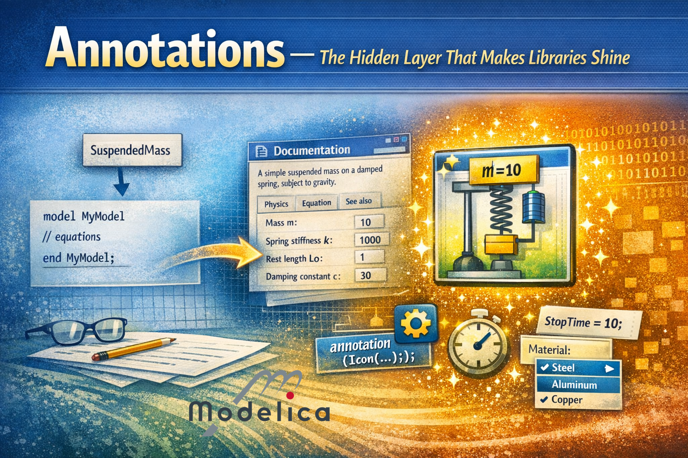
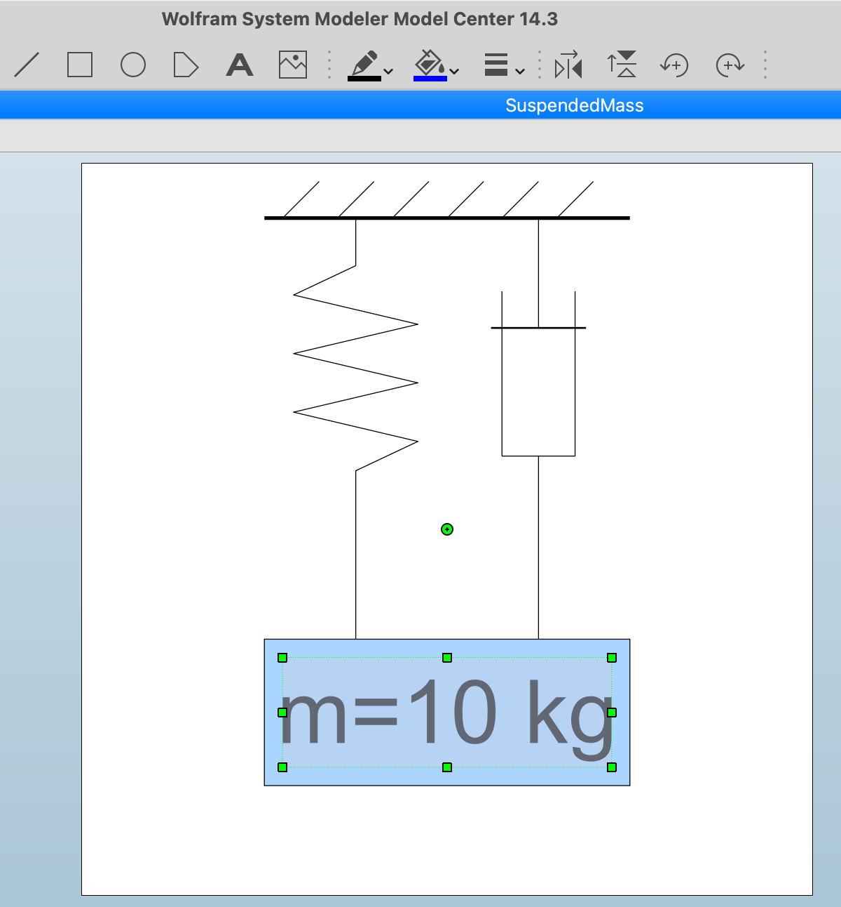
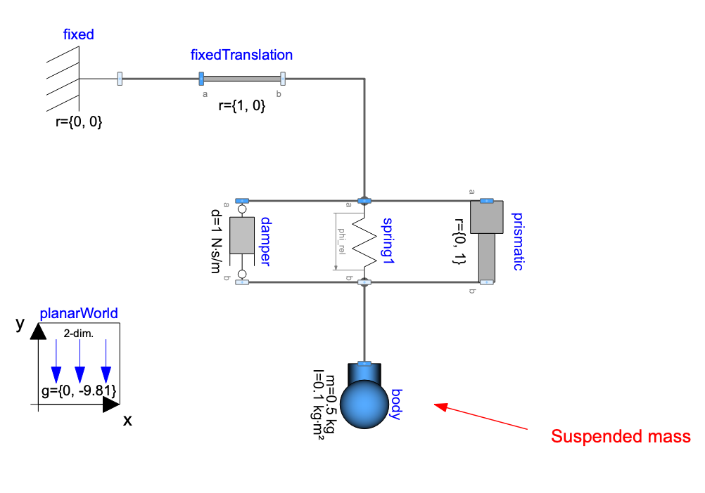
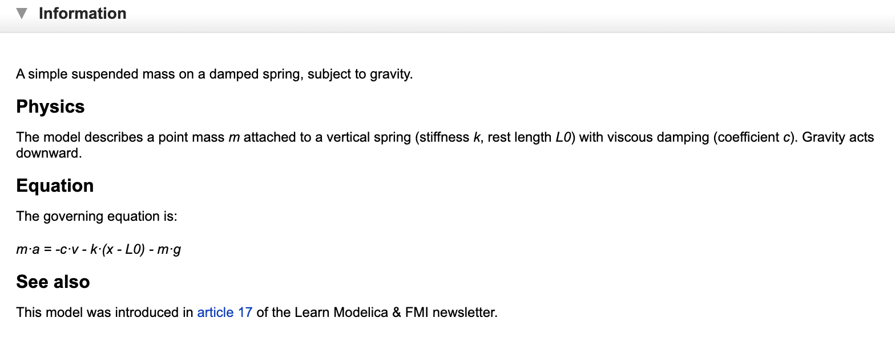
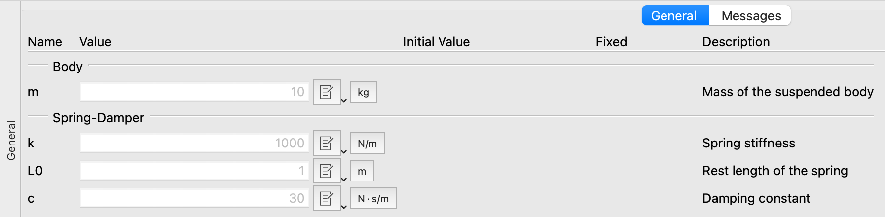

Annotations — The Hidden Layer That Makes Libraries Shine

I hope you’ve got your preferred drink in hand ☕️🫖💧
Last week, we built our own first library. A working library. Models, packages, within clauses, imports — the whole deal. And it works! …It just doesn’t look like much. 😅
Open the MSL and look at any component — beautiful icons, helpful documentation, parameter dialogs with dropdown menus. Open our SuspendedMass? A white rectangle with the model name in it. Functional? Yes. Inspiring? Not so much.
Today, we fix that. We learn about annotations — Modelica’s hidden layer of metadata that turns “it compiles” into “it’s a pleasure to use.” 💅
What are annotations, anyway?
Here’s the key thing to understand: annotations don’t affect the physics. Not even a bit! Your model will simulate exactly the same way with or without annotations. They’re metadata — information about the model, not for the model.
Well… that’s already wrong! “Good start, Clem…” There are a couple of exceptions that we’ll discuss later: annotations for simulations and indirectly the ones for symbolic manipulation and for functions.
Yet, for the most part, annotations are purely cosmetic. They tell the tool how to display your model, how to organize parameters, what documentation to show — but they don’t change the equations or the simulation results.
The syntax is simple:
annotation(...);That’s it. The annotation keyword, parentheses, stuff inside, semicolon. And yes, you get it: the secret is in the “stuff” (i.e. “…” in “(…)”). You can attach annotations to pretty much anything: models, packages, components, parameters, connections… They’re everywhere. And they’re always at the end — after the equations, after the declarations, right before the final end or semicolon.
I have introduced annotations quickly in our suspended mass initialization. And you’ve actually been staring at annotations since article 3. (Assuming you read the articles. 😉) Every icon you saw when dragging a component from the MSL? Annotation. Every connection line? Annotation. Every help text in a parameter dialog? Annotation. You just never had to care — the tool handled it for you. 🙈
But now you’re building libraries. And if you want anyone (including future-you) to actually enjoy using your library, you need to write some annotations.
Let’s see what we’re working with.
Our starting point: naked models
Remember our SuspendedMass within our library?
within LearnModelica.Mechanics.Translational;
model SuspendedMass "Suspended mass on a damped spring"
import SI = Modelica.Units.SI;
import Modelica.Constants.g_n;
parameter SI.Mass m = 10 "Mass of the suspended body";
parameter SI.TranslationalSpringConstant k = 1000 "Spring stiffness";
parameter SI.Length L0 = 1 "Rest length of the spring";
parameter SI.TranslationalDampingConstant c = 30 "Damping constant";
SI.Position x "Position of the mass";
SI.Velocity v "Velocity of the mass";
SI.Acceleration a "Acceleration of the mass";
equation
a = -c/m * v - k/m * (x - L0) - g_n;
a = der(v);
v = der(x);
end SuspendedMass;The description strings (those "..." after each declaration) are actually a form of annotation — they’re baked into the Modelica syntax itself. So we’re not completely naked. But that’s about all we’ve got.
Let’s start dressing up. 👔
Annotation #1: The icon
The most visible annotation (pun intended) is Icon. It defines what your model looks like when someone drags it onto a diagram.
annotation(Icon(
coordinateSystem(extent={{-100,-100},{100,100}}),
graphics={
Line(points={{-50,85},{50,85}}, color={0,0,0}, thickness=1),
Line(points={{-45,85},{-35,95}}, color={0,0,0}),
Line(points={{-30,85},{-20,95}}, color={0,0,0}),
Line(points={{-15,85},{-5,95}}, color={0,0,0}),
Line(points={{0,85},{10,95}}, color={0,0,0}),
Line(points={{15,85},{25,95}}, color={0,0,0}),
Line(points={{30,85},{40,95}}, color={0,0,0}),
Line(
points={{-25,85},{-25,72},{-42,64},{-8,56},
{-42,48},{-8,40},{-42,32},{-8,24},{-25,16},{-25,-30}},
color={0,0,0}),
Line(points={{25,85},{25,55}}, color={0,0,0}),
Line(points={{12,55},{38,55}}, color={0,0,0}, thickness=0.5),
Line(points={{15,65},{15,20},{35,20},{35,65}}, color={0,0,0}),
Line(points={{25,20},{25,-30}}, color={0,0,0}),
Rectangle(
extent={{-50,-30},{50,-70}},
fillColor={170,213,255},
fillPattern=FillPattern.Solid,
lineColor={0,0,0}),
Text(
extent={{-45,-35},{45,-65}},
textString="m=%m")
}
));Okay, that’s a lot of curly braces! But at least this one actually looks like a suspended mass. Let me break it down:
coordinateSystem: Defines the canvas.{{-100,-100},{100,100}}means a 200×200 coordinate space centered at (0,0). This is the standard.graphics: A list of drawing primitives — rectangles, ellipses, lines, text, polygons… you can combine them to create your icon. The primitives are drawn in order, so the wall and hatching come first, then the spring and damper, then the mass rectangle, and finally the text on top.Rectangle: Draws a filled rectangle.extentdefines two corners,fillColoris RGB to define… the color it is filled with 💡,fillPatternmakes it solid.Text: Displays the text specified as string.%is a nice trick that allows substitution of the actual value — here%mshows the actual value of parameterm. So if someone setsm=15, the icon displaysm=15. Very convenient!Line: Draws lines between points. We use them here for the wall, the hatching, the spring zigzag, and the damper parts (rod, piston, cylinder). Lines are incredibly versatile!
Now here’s the good news: you will almost never write icon annotations by hand. 😅
Every Modelica tool has a graphical icon editor — you draw your icon with a mouse, and the tool generates the annotation for you. The same way most people don’t write SVG by hand, most people don’t write Icon annotations by hand.
Spoiler alert: I am NOT an artist! 😅

You see the menu includes the same primitives as the annotation syntax: rectangles, ellipses, lines, polygons, text… You can change colors, line thickness, fill patterns… And when you’re done, you save and the tool generates the Icon annotation for you.
But understanding the syntax is useful for three reasons:
- Sometimes you need to fix an icon (alignment, color, text substitution) and it’s faster to edit the annotation directly than to fight with the graphical editor.
- You understand what your tool is doing — no more mysterious code blocks at the bottom of your models.
- You can animate icons with
DynamicSelect. We won’t see that today but it requires you to understand how the icon is built and what you want to change over time (e.g. the position of the rectangle).
What about Diagram?
There’s also a Diagram annotation that defines what the model looks like when you open it (the internal view with connected components). Same syntax as Icon, same graphical primitives. But while Icon is what you see from the outside, Diagram is what you see from the inside.
It is seldomly used though. For equation-based models like our SuspendedMass (no sub-components), the Diagram annotation can be relevant. And when you build models by connecting components — like we did in article 3 with the hot beverage model -, every component placement, every connection line, every text label in that diagram define the diagram view, and thus the Diagram annotation might not be that much needed. It can however be useful to add some comments on your models and place them in the diagram with the Diagram annotation - like I did here on PlanarMechanics.Examples.SpringDemo by adding an arrow and a text to show the “suspended mass” part of the model:

Annotation #2: Documentation
Icons make your model look good in the diagram. Documentation makes it understandable.
annotation(Documentation(info="<html>
<p>A simple suspended mass on a damped spring, subject to gravity.</p>
<h4>Physics</h4>
<p>The model describes a point mass <i>m</i> attached to a vertical
spring (stiffness <i>k</i>, rest length <i>L0</i>) with viscous
damping (coefficient <i>c</i>). Gravity acts downward.</p>
<h4>Equation</h4>
<p>The governing equation is:</p>
<p><i>m·a = -c·v - k·(x - L0) - m·g</i></p>
<h4>See also</h4>
<p>This model was introduced in
<a href='https://dr-clementcoic.github.io/LearnModelicaFMI/017-BasicCode.html'>
article 17</a> of the Learn Modelica & FMI newsletter.</p>
</html>"));Yes, it’s HTML inside a Modelica string. I know. It looks a bit… 1999. (The Modelica specification was written in the 90s, and it shows here. 😉)
But it works! When a user right-clicks on your model and selects “Documentation” (or however your tool calls it), they get a nicely formatted help page with equations, links, and all the info they need to use your model correctly.

A few tips:
- Keep it concise but complete — what the model does, what the parameters mean, any assumptions or limitations.
- Use
<h4>for subsections (not<h1>or<h2>— those are reserved for the tool’s own rendering). - Add images if relevant! It might be worth a thousand words 😉. You can embed images with
<img src="...">— just make sure to use relative paths so they work across different machines. - Add links to related models or external resources.
- There’s also a
revisionsfield for changelog info:Documentation(info="...", revisions="<html>...</html>"). Useful for libraries with version history.
And here again, most tools also have a WYSIWYG (What You See Is What You Get) documentation editor so you don’t have to write raw HTML. But again — knowing the syntax means you can fix things when the editor does something weird.
Annotation #3: Experiment settings
This one is short and sweet. When you simulate a model, you usually want specific settings: stop time, interval, solver, tolerance. You can embed these as defaults:
annotation(experiment(
StopTime=10,
Interval=0.01,
Tolerance=1e-6
));When someone opens your model and hits “Simulate,” these values will be pre-filled. No more guessing “what stop time should I use?” — the model tells you.
This is especially useful for example models and test cases. You’re essentially saying: “here’s how I intended this model to be simulated.”
💡 Remember: These are defaults, not constraints. Users can always change them. You’re just saving them the hassle of figuring it out.
I had mentioned there are some exceptions to the “Your model will simulate exactly the same way with or without annotations” rule. This is one of them obviously. The experiment annotation does affect the simulation, but only in the sense that it provides default solver settings. It doesn’t change the equations or the model’s behavior.
Annotation #4: Parameter dialogs with Dialog
Now we’re getting into the “quality of life” territory. When you have a model with many parameters, the default parameter dialog is just a flat list. Not great for usability.
The Dialog annotation lets you organize parameters into tabs and groups:
parameter SI.Mass m = 10 "Mass of the suspended body"
annotation(Dialog(tab="General", group="Body"));
parameter SI.TranslationalSpringConstant k = 1000 "Spring stiffness"
annotation(Dialog(tab="General", group="Spring-Damper"));
parameter SI.Length L0 = 1 "Rest length of the spring"
annotation(Dialog(tab="General", group="Spring-Damper"));
parameter SI.TranslationalDampingConstant c = 30 "Damping constant"
annotation(Dialog(tab="General", group="Spring-Damper"));Now when a user double-clicks the component, they see organized parameters:
- Tab: General
- Group: Body →
m - Group: Spring-Damper →
k,L0,c
- Group: Body →

With 4 parameters, this is nice but not critical. With 30 parameters? This is the difference between “usable” and “I give up.” Open any MSL component — Modelica.Fluid.Pipes.DynamicPipe, for instance — and check how its parameters are organized. That’s Dialog at work.
The Evaluate annotation
Quick bonus: want a parameter to be evaluated at compile time (making the simulation faster but requiring recompilation if the user wants to change its value)?
parameter Integer n = 10 "Number of elements"
annotation(Evaluate=true);This tells the tool: “treat n as a constant during compilation.”
Useful tip: you can, in many tools, have annotation(Evaluate=condition) where condition is a boolean expression. This allows you to make the evaluation conditional on other parameters or settings - which can be very convenient to set up a flag for “fast simulation mode” vs “detailed simulation mode” for instance.
Annotation #5: Choices
One more gem before we wrap up. The choices annotation provides a dropdown menu for parameters — particularly powerful with replaceable models:
replaceable model Material = Steel
constrainedby BaseMaterial "Select material"
annotation(choices(
choice(redeclare model Material = Steel "Steel"),
choice(redeclare model Material = Aluminum "Aluminum"),
choice(redeclare model Material = Copper "Copper")
));Remember replaceable models from article 12? We talked about how they let users swap components. The choices annotation makes this discoverable — instead of requiring users to know which models are available, they get a dropdown. Click, select, done. ✅
To have all choices appear in the dropdown menu, use
annotation(choicesAllMatching = true).
You can also use choices for simple parameters:
parameter String material = "Steel" "Material name"
annotation(choices(
choice="Steel",
choice="Aluminum",
choice="Copper"
));Putting it all together
Let’s apply everything to our SuspendedMass. Here’s the “after” version:
within LearnModelica.Mechanics.Translational;
model SuspendedMass "Suspended mass on a damped spring"
import SI = Modelica.Units.SI;
import Modelica.Constants.g_n;
parameter SI.Mass m = 10 "Mass of the suspended body"
annotation(Dialog(tab="General", group="Body"));
parameter SI.TranslationalSpringConstant k = 1000 "Spring stiffness"
annotation(Dialog(tab="General", group="Spring-Damper"));
parameter SI.Length L0 = 1 "Rest length of the spring"
annotation(Dialog(tab="General", group="Spring-Damper"));
parameter SI.TranslationalDampingConstant c = 30 "Damping constant"
annotation(Dialog(tab="General", group="Spring-Damper"));
SI.Position x "Position of the mass";
SI.Velocity v "Velocity of the mass";
SI.Acceleration a "Acceleration of the mass";
equation
a = -c/m * v - k/m * (x - L0) - g_n;
a = der(v);
v = der(x);
annotation(
Documentation(info="<html>
<p>A simple suspended mass on a damped spring, subject to gravity.</p>
<h4>Physics</h4>
<p>The model describes a point mass <i>m</i> attached to a vertical
spring (stiffness <i>k</i>, rest length <i>L0</i>) with viscous
damping (coefficient <i>c</i>). Gravity acts downward.</p>
<h4>Equation</h4>
<p>The governing equation is:</p>
<p><i>m·a = -c·v - k·(x - L0) - m·g</i></p>
<h4>See also</h4>
<p>This model was introduced in
<a href='https://dr-clementcoic.github.io/LearnModelicaFMI/017-BasicCode.html'>
article 17</a> of the Learn Modelica & FMI newsletter.</p>
</html>"),
experiment(StopTime=10, Interval=0.01, Tolerance=1e-6),
Icon(
coordinateSystem(extent={{-100,-100},{100,100}}),
graphics={
Line(points={{-50,85},{50,85}}, color={0,0,0}, thickness=1),
Line(points={{-45,85},{-35,95}}, color={0,0,0}),
Line(points={{-30,85},{-20,95}}, color={0,0,0}),
Line(points={{-15,85},{-5,95}}, color={0,0,0}),
Line(points={{0,85},{10,95}}, color={0,0,0}),
Line(points={{15,85},{25,95}}, color={0,0,0}),
Line(points={{30,85},{40,95}}, color={0,0,0}),
Line(
points={{-25,85},{-25,72},{-42,64},{-8,56},
{-42,48},{-8,40},{-42,32},{-8,24},{-25,16},{-25,-30}},
color={0,0,0}),
Line(points={{25,85},{25,55}}, color={0,0,0}),
Line(points={{12,55},{38,55}}, color={0,0,0}, thickness=0.5),
Line(points={{15,65},{15,20},{35,20},{35,65}}, color={0,0,0}),
Line(points={{25,20},{25,-30}}, color={0,0,0}),
Rectangle(
extent={{-50,-30},{50,-70}},
fillColor={170,213,255},
fillPattern=FillPattern.Solid,
lineColor={0,0,0}),
Text(
extent={{-45,-35},{45,-65}},
textString="m=%m")
}));
end SuspendedMass;Same physics. Same equations. Same simulation results. But now it has:
- ✅ An icon that shows what it is
- ✅ Documentation that explains what it does
- ✅ Experiment settings so users know how to simulate it
- ✅ Organized parameter dialogs
From “white rectangle” to “professional component.” Not bad for a few extra lines of metadata. 😎
And the package too!
Don’t forget the package itself. Our top-level LearnModelica/package.mo from last time already had a Documentation annotation. But you can also add version info:
within;
package LearnModelica "Models from the Learn Modelica & FMI newsletter"
annotation(
version="0.1.0",
Documentation(info="<html>
<p>A collection of example models built throughout the
<a href='https://dr-clementcoic.github.io/LearnModelicaFMI/'>
Learn Modelica & FMI</a> newsletter.</p>
</html>"));
end LearnModelica;The version annotation is how Modelica tools track library versions and dependencies. When library A uses library B, the uses annotation records which version of B was expected:
annotation(uses(Modelica(version="4.0.0")));This is how your tool knows to warn you when you’re using a model built against a different version of a dependency. Version management for free. 📦
A quick reference card
Here’s a cheat sheet of the annotations we covered today:
| Annotation | What it does | Applies to |
|---|---|---|
Icon(...) |
Defines the external graphical appearance | Models, packages |
Diagram(...) |
Defines the internal diagram layout | Models |
Documentation(info="...") |
HTML help text | Models, packages, connectors |
experiment(...) |
Default simulation settings | Models |
Dialog(tab=..., group=...) |
Organizes parameter dialogs | Parameters |
Evaluate=true |
Compile-time constant | Parameters |
choices(...) |
Dropdown selection menu | Parameters, replaceable |
version="..." |
Library version tracking | Packages |
uses(...) |
Dependency declaration | Packages |
And there are more — Placement (where a component sits in the diagram), Line (how connections are routed), defaultComponentName, defaultComponentPrefixes… We’ll encounter some of these as we keep building models.
💡 If you want the exhaustive list, the Modelica Language Specification has a dedicated chapter on annotations. But honestly? The ones in the table above will cover 90% of what you need.
The END for today
Enough for today. Your library now has structure AND style. Packages from last time, annotations from today — you’ve got a library that’s not just correct, but pleasant to use.
You also saw that all these annotations can pretty much crowd your model code. That’s why most tools can collapse annotations into a single block at the end of the model. It keeps your code clean and lets you focus on the equations when you want to.
Next time, we tackle something completely different: what happens when things change abruptly? Your solver happily integrates smooth differential equations… until a thermostat switches, a ball bounces, or a valve slams shut. Welcome to the world of events. 🤯
Break is over, go back to what you were doing.
Clem
Next ->
© 2025-2026 Clément Coïc — Licensed under creative commons 4.0. Non-commercial use only.